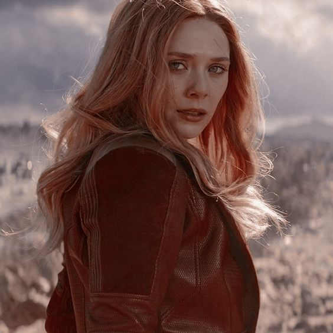

Um dos seres mais poderosos do Universo Marcel, personagem das HQs publicadas pela Marvel Comics, criada por Stan Lee e Jack Kirby. Pertenceu ao grupo Irmandade de Mutantes e entrou para os Vingadores, onde permanece como membro até os dias atuais. Sua primeira aventura foi em Uncanny X-Men #4 (1964).
Wanda
Maximoff
Feiticeira Escarlate
Wanda Maximoff em WandaVision
Feiticeira Escarlate
Poderes

A Feiticeira Escarlate é uma humana aprimorada. Inicialmente, seu poder era a manipulação de probabilidades, desviar objetos e ataques, gerar combustão ou enferrujar metais. Seus poderes evoluíram quando Wanda demonstrou-se capaz de controlar a Energia do Caos, ignorar as leis da física e do espaço-tempo, além de ser uma fonte de poder para alterar toda a realidade. Wanda é capaz de ressuscitar os mortos, apagar seres da existência ou criar seres a partir do nada. Possui ensinamentos da Magia de nível Ômega avançado, sendo capaz de levitar, teletransportar-se, gerar campos de força, provocar explosões, manipular mentes, precognição, criar seres sobrenaturais, entre várias outras habilidades, dando-lhe um leque de poderes inimagináveis aos seus feitiços.

